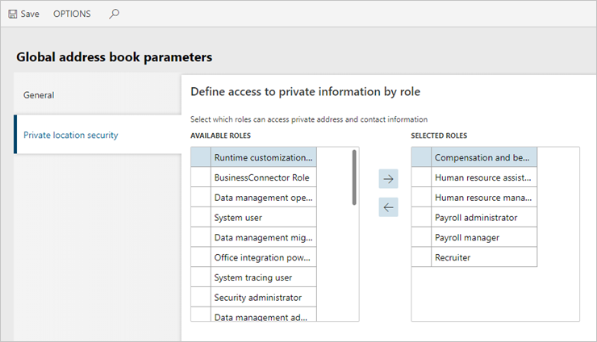

Zugriff auf private Adressen nach Sicherheitsrolle
Abgang
Nachdem ein Kunde eine Sicherheitsrolle dupliziert und sich als diese neue Rolle anmeldet, kann der Kunde die Adressen, die als privat markiert wurden, nicht sehen.
Auflösung
Um das Problem zu beheben, muss der Kunde diese Schritte für die duplizierte Sicherheitsrolle befolgen.
- Wechseln Sie zu Organisationsverwaltung > Globales Adressbuch > Parameter für das globale Adressbuch.
- Auf der Registerkarte Sicherheit für private Standorte verschieben Sie die neue Sicherheitsrolle von der Liste Verfügbare Rollen in die Liste Ausgewählte Rollen.
- Wählen Sie Speichern.
